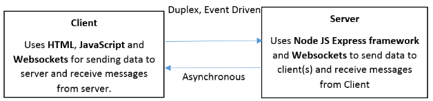

A chatbot that reverses what a user typed in and returns back
ChatBot that reverses a string. Uses WebSocket & HTML 5 on the client side and Node JS, Websockets on the server side.
The javascript of the application is unit tested using Jasmine framework.

Note: Application works best on Chrome browser.